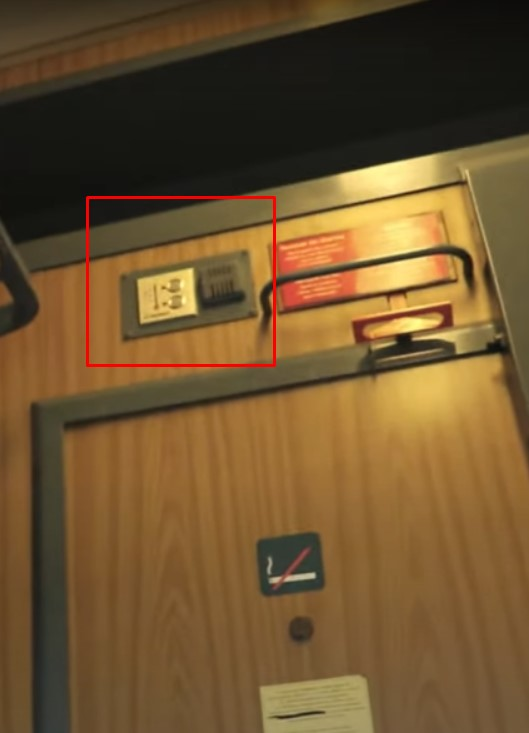

The problems that arise in the train station are:
Our application solves this problem by using an AR software that augments the real world with useful information for the user, like train number, line number, wagon number, directions to a bathroom, etc.
To get the wagon number we use the following method:
The images from the cameras are the processed by a server that gives to the users of the application the correct wagon number, train number, etc.
Because there can be situations in which a person did not hear what was said through the speakers, the voice is also registered in the application, so the user can replay the audio how many times they need.
The app also has a help button for persons with disabilities to get help from the staff, for example, if a person with reduced mobility needs to get their wheelchair in the train, they can request help from the application.
Our application is used to provide useful information for people that travel by train and have difficulties in the station.
Anyone that travels by train, from people that use the train almost daily to new travelers.
Fitts' Law is a principle that states the time required to move to a target area is a function of the distance to the target and the size of the target. In other words, the larger the target and the closer it is to the starting point, the easier it is to hit. This law is often used in interface design to help determine the size and placement of buttons or other clickable elements.
If we try to apply this principle in real life, in the train station, if we start at the train schedule table, we cannot see all the platform numbers, and so the person is required to check all the platforms to get to the right one. The problem is that the number plates for each platform are not visible enough.
In our appication, the buttons on the home page are big and easy for the user to find and press.
Hick's Law states that the time it takes to make a decision increases as the number of choices increases. This law can be applied to interface design by reducing the number of options presented to users, to make it easier for them to make a decision and navigate the interface.
On the digital screen from the station you can see all the trains that are about to arrive, so you don’t have unnecessary information, so we can say that hick’s law applies here
On the main screen on our application, we have a reduced number of options, so there is no trouble for the user to select what he/she needs.
Steering Law, also known as the law of steering, is a principle that states that the time it takes to steer a pointing device (such as a mouse) to a target is a function of the angle between the starting position and the target. In other words, it is easier to steer to targets that are closer to the starting position and require smaller angles of movement. This law can be applied in interface design to help determine the placement and spacing of clickable elements, as well as the sensitivity of the pointing device.
the wagon number (and informations) are only placed at one end of the wagon so the user is required to walk to the other end to see if he’s getting in the right wagon/train
When we designed the application we have taken into account the distance between the buttons and how easy is for the user to press them.
Metaphors and idioms are figures of speech that allow designers to use familiar concepts to explain or represent new or complex ideas. They can be used in interface design to create a sense of familiarity or to help users understand the function or purpose of an element. For example, using the metaphor of a file folder to represent a digital storage system, or the idiom "drag and drop" to describe moving an object on a screen.
Affordances refer to the properties of an object or element that suggest how it should be used. In interface design, affordances are used to make it clear how users can interact with different elements of the system. For example, a button that looks like it can be clicked suggests that it can be interacted with, while a static image suggests that it is not interactive.
in the images we see a thermostat that we can interact with
in this image we see a button we can interact with to open the doors
Visual variables are the attributes of visual elements that can be used to communicate information or create emphasis in a design. These variables include things like color, size, shape, and texture. In interface design, visual variables can be used to help communicate information quickly and clearly, such as using color coding to indicate the status of a task or highlighting important information with bold or larger text.
The user enters the train station, opens the application and then he/she is guided to the train and wagon where he/she is supposed to be in.
In the Main Menu we have three buttons: one for speaker, one for 'scan QR' and one for 'ask for help'.
In the speaker section you can select a train and hear the information about departure.
In the 'scan QR' section the user can scan a wagon or platform number, and if you press on the number you see aditional information, like what trains are about to arrive.